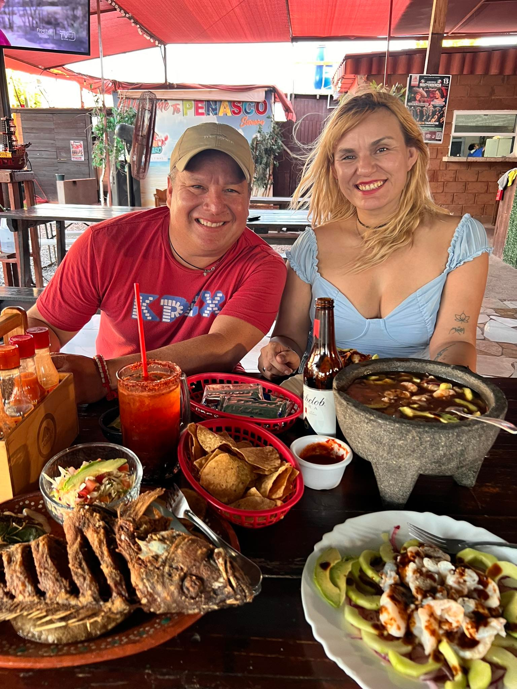

El corazón del lugar
La casa que Don Margaro abrió
Don Margaro nos abrió las puertas hace años, aquí en la calle Hidalgo. Hoy, Abdiel lleva adelante esa misma cocina: mariscos estilo Sonora y Sinaloa, hechos con calidad, servidos con atención.
Nada de congelados. Todo lo que pides sale del comal o del caldo al momento. Si vienes con tu pesca del día, Abdiel te la prepara.
Más de 297 opiniones en Google. 4.7 estrellas. Cero página web, hasta ahora.
